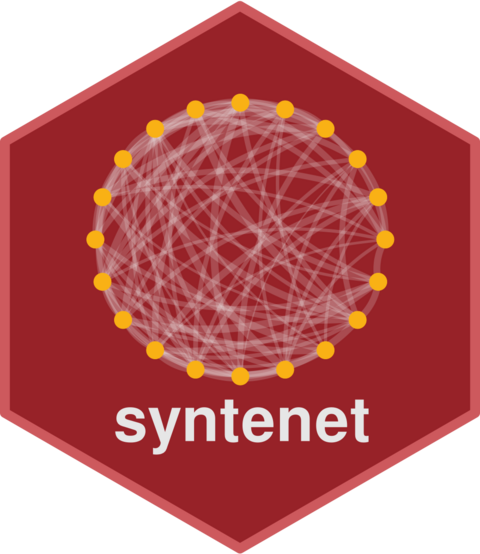

Infer microsynteny-based phylogeny with IQTREE
Source:R/07_microsynteny-based_phylogeny.R
infer_microsynteny_phylogeny.RdInfer microsynteny-based phylogeny with IQTREE
Usage
infer_microsynteny_phylogeny(
transposed_profiles = NULL,
bootr = 1000,
alrtboot = 1000,
threads = "AUTO",
model = "MK+FO+R",
outdir = tempdir(),
outgroup = NULL,
verbose = FALSE
)Arguments
- transposed_profiles
A binary and transposed profile matrix. The profile matrix can be obtained with
phylogenomic_profile().- bootr
Numeric scalar with the number of bootstrap replicates. Default: 1000.
- alrtboot
Numeric scalar with the number of replicates for the SH-like approximate likelihood ratio test. Default: 1000.
- threads
Numeric scalar indicating the number of threads to use or "AUTO", which allows IQTREE to automatically choose the best number of threads to use. Default: "AUTO".
- model
Substitution model to use. If you are unsure, pick the default. Default: "MK+FO+R".
- outdir
Path to output directory. By default, files are saved in a temporary directory, so they will be deleted when the R session closes. If you want to keep the files, specify a custom output directory.
- outgroup
Name of outgroup clade to group the phylogeny. Default: NULL (unrooted phylogeny).
- verbose
Logical indicating if progress messages should be prompted. Default: FALSE.
Examples
data(clusters)
profile_matrix <- phylogenomic_profile(clusters)
tmat <- binarize_and_transpose(profile_matrix)
# Leave only some legumes and P. mume as an outgroup for testing purposes
included <- c("gma", "pvu", "vra", "van", "cca", "pmu")
tmat <- tmat[rownames(tmat) %in% included, ]
# Remove non-variable sites
tmat <- tmat[, colSums(tmat) != length(included)]
if(iqtree_is_installed()) {
phylo <- infer_microsynteny_phylogeny(tmat, outgroup = "pmu",
threads = 1)
}